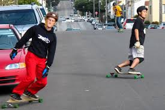

Longboarding

Riding a longbroad is so much fun. It is like floating on land. I love listening to my music while riding my longbroad around my neighborhood or parks. It also really centers me because it helps me focus on balance and keeping a good speed.
